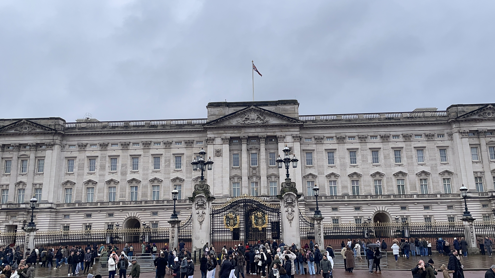
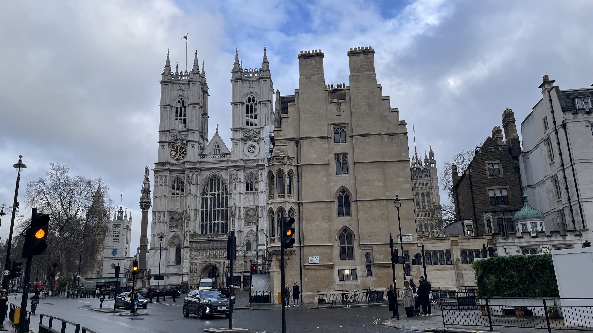
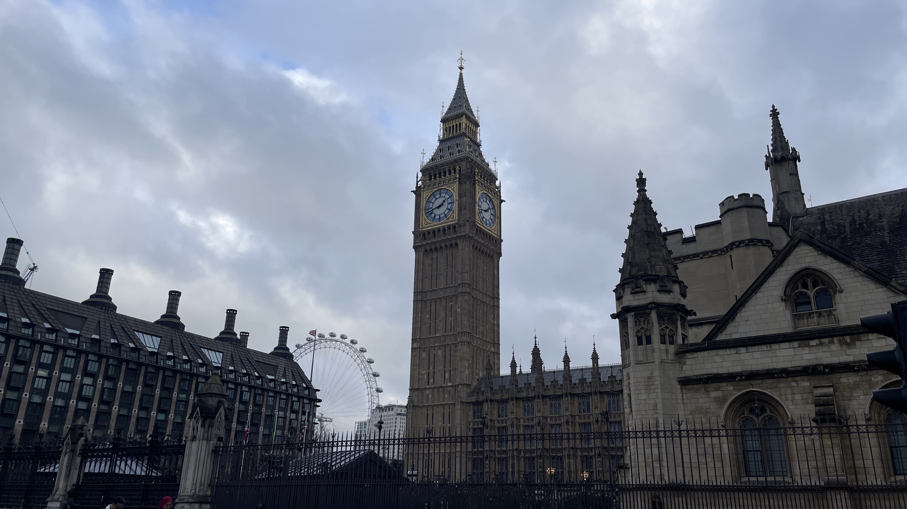
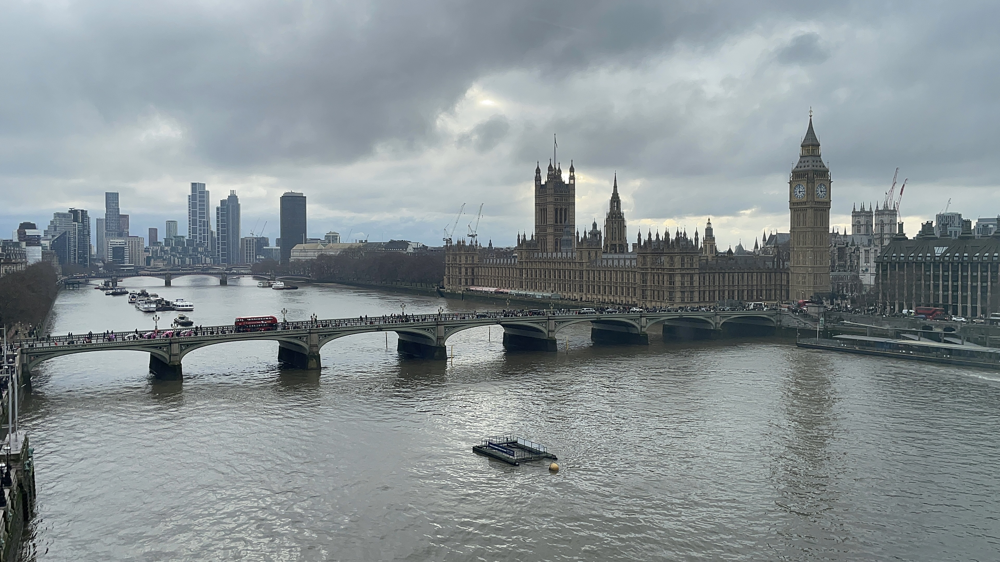
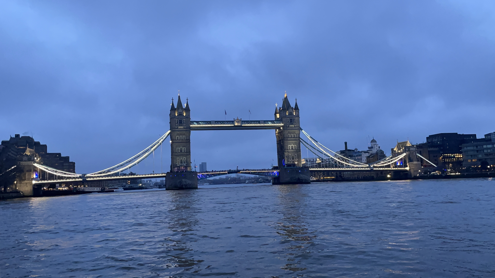
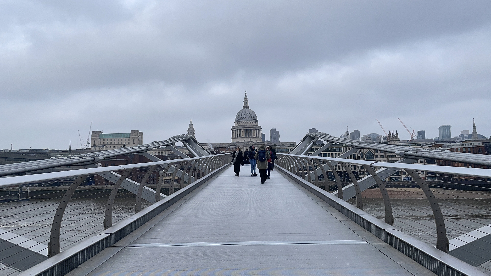
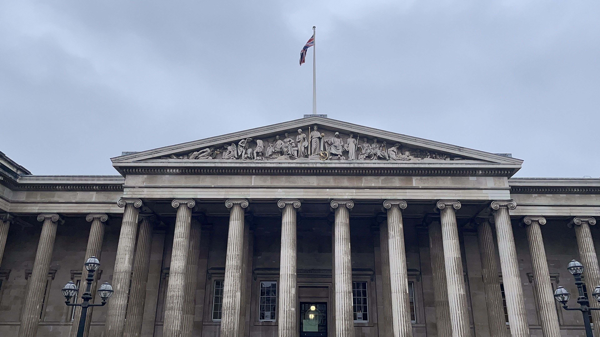
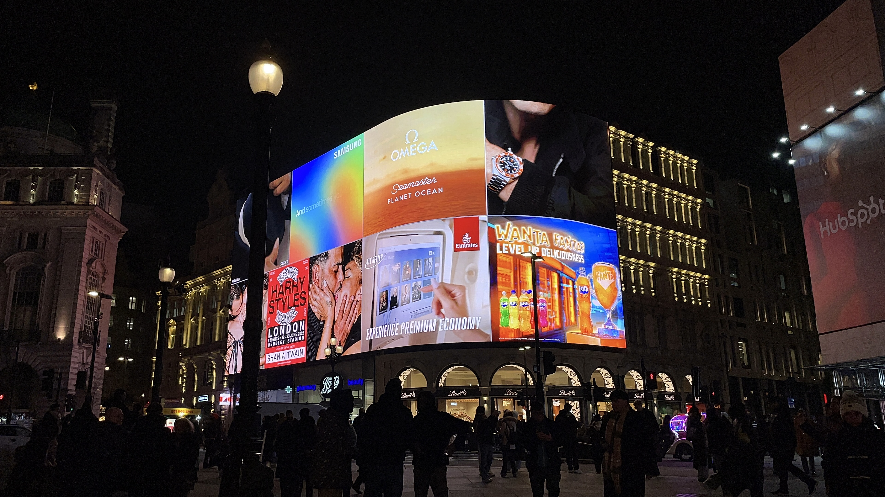

I got stuck in London for two days
February 26, 2026
After spending some time in Kigali, Rwanda, I was scheduled to fly back to Boston over the weekend. During that time, I knew there would be a huge snowstorm in Boston, which sounds typical of New England winter weather. What I didn’t know, however, was this snowstorm spanned over the East Coast and would wreak havoc in the area.
My connection was in London, and after one flight cancellation, I thought I would just stay in the Heathrow airport overnight. Not the most fun, but doable.
When I went to get my travel itinerary, however, I was told that my flight was canceled again and pushed back another day, meaning that I would have to spend two nights at the airport. But I think the airline didn’t allow that, since they promptly booked me a nearby hotel.
Hence, I was thrust into London, knowing no one and having no plan.
I have never been to London, nor the UK, for that matter. But I knew I probably wouldn’t get to come back for a while. Besides, I couldn’t see myself sitting in the hotel for two whole days when I had a chance to see a whole new city. I knew I had to make the most of the time I got, so I got a strong urge to tour as many main attractions as I could. I felt like if I didn’t, I would’ve failed by letting an opportunity fly away.
Immediately, I panicked and asked ovieneutrino for help on how to navigate Central London, since it was about an hour and a half from the hotel where I was staying. I had zero idea how any of the public transit worked, did not have any pounds, and on top of that, probably did not have a credit card that worked internationally. All I had was me, my crippling sense of disorientation, and Google Maps to guide me forward.
I tried to take a bus, which was when I confirmed that I did, in fact, not have any working currency. Luckily, the driver was kind enough to let me in anyway. On the way to my next stop, I had enough time to do a little bit of research; I figured out that I could get a day pass to take any line of public transportation an unlimited number of times, which would solve the problem of figuring out how to get to Central London.
I still didn’t know my exact route and couldn’t find the Oxford Tube (where Google Maps suggested to go), so I took the Metropolitan line instead. I thought I took the wrong route at first, since I was heading perpendicularly from where I needed to go. However, a lady was kind enough to help me navigate, and we chatted in the metro the whole time. Though I think her suggested path took an extra hour longer than it would’ve through the Oxford Tube, it was nice to slow down a little bit. At the time, I still felt a lot of adrenaline and felt like I needed to tour as many places as possible with the limited amount of time I had; I forgot the point of travel was to actually enjoy myself while there, so the conversation was a good reminder.




I first saw Buckingham Palace! It was kind of surreal that I was actually touring London. I basically just walked around, exchanged money, and ate for the first time in multiple hours (since I didn’t eat breakfast on the plane, oops). I saw Westminster Abbey, which was closed only on Sunday (guess what day it was…), Big Ben, and rode the London Eye for the view. I then took a cruise from Westminster Pier to Tower Pier, which took me under some famous bridges (Millenium, London, and Tower).




The next day, I toured spots I wanted to see closer, so I went to the Tower of London, walked across the Tower Bridge, saw Borough Market (which is closed only on Mondays… guess what day it was…), and went into a restaurant that looked good. I crossed the Millenium Bridge and ran into St. Paul’s Cathedral before heading to the British Museum.
Then, I went to Chinatown! I walked around a bit before settling on dinner and a bubble tea place. I ultimately decided on Molly Tea, since there wasn’t as long of a line. I was delighted because I didn’t have to wait an hour in line like I had to in the newly-opened spot in Boston Chinatown. I then visited Piccadilly Circus, known for its neon lights, and headed home afterwards, collapsing into bed immediately.
Two flight cancellations, two delays, one undelay, and another delay later… I finally got back to campus. This trip was definitely the craziest one I’ve ever been on, but it also taught me how to deal with a lot of travel inconveniences. First, I was solo-tripping with no preparation beforehand, which was initially terrifying. However, I was really lucky to have gotten stuck in London of all places, because there was no language barrier, and it was relatively safe. Also, the public transportation is very well done, and pretty much all the tourist sites are within walking distance from one another. I would definitely love to visit again and tour the UK in general, though in less of a time crunch. But for now, I’ll have to wait for my next adventure.
I wrote this article originally for The Tech, a student newspaper group at MIT! You may read this post here.
✩₊˚.⋆☾⋆⁺₊✧
That is all, consider subscribing or